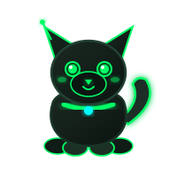
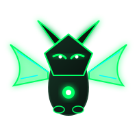
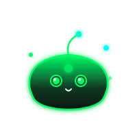
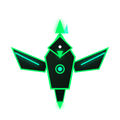

🚀 Plataforma Futurista ZIRO AI PET + Unreal Engine 5.8
PROYECTO ACTIVOProyecto de destino actual: Ninguno seleccionado (no se usará ZIRO HOST automáticamente)
👤 Identidad & Nombres
LLAMADA PERSONALIZADAConfigura cómo se llama tu mascota y cómo quieres que te llame a ti cuando te habla o te pide confirmación:
💬 Tu mascota te llamará por tu nombre, te pedirá permisos cuando realice cambios importantes y te consultará: "¿Quieres hacer algún cambio o te parece bien lo que hice, [Tu Nombre]?"
🐾 Mascotas Disponibles
PREDEFINIDASZiro Original
Mascota Rosada Clásica
✓ ACTIVO
Ziro
Gato Cibernético
✓ ACTIVO
Kitsune
Anime ComfyUI HD
✓ ACTIVO
Sparky
Perro Shiba Neón
✓ ACTIVO
Nexus
Dragón Mecha
✓ ACTIVO
Glitch
Slime Cyber Kawaii
✓ ACTIVO
Volt
Halcón Drone
✓ ACTIVO🎨 Conexión Comfy Desktop (Motor Anime Z-Image-Turbo)
VERIFICANDO...Conectado a tu programa Comfy Desktop local (127.0.0.1:8188) con tu GPU RTX para generar personajes de anime de alto nivel (1024x1024) y recortar el fondo automáticamente en 3D.
✨ Mis Mascotas Anime & Personalizadas (3D Sin Fondo)
CREADAS POR TI📸 Crear Mascota Anime 3D desde Foto
Sube una imagen de cualquier personaje de anime, dibujo o mascota; el sistema quitará el fondo automáticamente y animará el personaje en 3D.
🎨 Generar Personaje Anime (Comfy Desktop)
Abre Comfy Desktop en tu pantalla y genera un personaje de anime de alto nivel con Z-Image-Turbo y recorte 3D automático.
🎛️ Dispositivos de Audio y Micrófono
HARDWARE SELECTORElige exactamente qué micrófono usará la mascota para escucharte y qué altavoces o auriculares emitirán su voz:
📞 Llamada en Vivo LiveKit ("Activar Ziro" Manos Libres)
SIEMPRE ESCUCHANDOHabla con tu mascota en tiempo real como en una llamada en vivo sin tocar ningún botón. Di "Activar Ziro" (o háblale directamente) y la mascota te responderá con voz automáticamente.
El micrófono permanece abierto con detección inteligente de voz (VAD + Pre-Roll) y pausa automáticamente cuando Ziro habla.
🗣️ Voces en Español (Naturales e Inteligentes)
NEURAL TTSSelecciona la voz en español que más te guste para tu mascota. Incluye voces naturales de alta fidelidad con acentos de España, Argentina, México, Colombia y Chile:
📊 Diagnóstico de Conversación Natural (7 Tiempos Reales)
STREAMING + DAEMONMedición real paso a paso desde el fin de voz hasta el primer sonido reproducido (sin suposiciones):
📁 Cargar Voz o Sonido Descargado en tu PC
ARCHIVOS LOCALES¿Tienes un archivo de voz o sonido descargado en tu ordenador (.mp3, .wav, .ogg)? Puedes cargarlo aquí para agregarlo a la mascota.
⚙️ Opciones de Comportamiento
Permite hablarle en tiempo real con el botón del micrófono.
La mascota habla en voz alta cuando te responde un mensaje o ejecuta un comando.
Pronunciar cada respuesta inmediatamente al recibirla.
🧠 Modo de Inteligencia Artificial
FLEXIBLEConecta a ZIRO con modelos locales en tu PC o con las APIs más potentes de Internet.
⚙️ Parámetros de Conexión
http://localhost:11434 | Para LM Studio: http://localhost:1234/v1
⚡ Comandos por Voz Integrados
NATIVOS WINDOWSSolo di estas frases por el micrófono y ZIRO las ejecutará al instante en tiempo real:
| Frase de Voz | Acción que Realiza | Estado |
|---|---|---|
"abrime youtube" |
Abre YouTube en tu navegador web predeterminado | Activo |
"busca [cancion/tema] en youtube" |
Busca y reproduce videos directamente en YouTube | Activo |
"abrime la calculadora" |
Ejecuta la Calculadora de Windows | Activo |
"abrime el bloc de notas" |
Abre el Bloc de Notas de Windows | Activo |
"abrime el explorador de archivos" |
Abre el explorador de carpetas de Windows | Activo |
"abrime spotify" |
Inicia Spotify en tu escritorio o web | Activo |
"abrime discord" |
Inicia Discord | Activo |
"abrime steam" |
Inicia la plataforma Steam | Activo |
"abrime google" o "busca [tema]" |
Realiza búsquedas instantáneas en Google | Activo |
"que hora es" o "que dia es" |
Te dice la hora exacta y la fecha actual | Activo |
➕ Añadir Comando Personalizado
TUS PROGRAMAS🖥️ Configuración de la Ventana
ESCRITORIOMantiene a tu mascota flotando por encima de juegos y ventanas de trabajo.
✨ Aros Holográficos y Estela de Efectos 3D
PERSONALIZACIÓN VISUALPersonaliza el color de los aros de energía orbitales y la estela de partículas mágicas que envuelven a tu mascota en el escritorio:
🎙️ También puedes cambiarlo por voz diciendo: "aros dorados", "aros cyan", "estela de estrellas", "estela de corazones", "chispas eléctricas", etc.
🎨 APARIENCIA ZIRO — Paletas, HEX/RGB y Animaciones
LIVE THEME ENGINEModifica en vivo colores, iluminación, neón, transparencia y velocidad de animaciones en toda la plataforma (incluyendo Procedural Framework y Finisher Studio):
🎮 Conexión en Tiempo Real con ZIROAI.uplugin (ZiroHost)
LISTO
Tu mascota virtual se comunica en tiempo real con el plugin ZIROAI.uplugin en D:\legolas-ai-v1.0\ZiroHost\Plugins\ZIROAI\ZIROAI.uplugin (84 herramientas C++ + WebSocket 8765 + GameThread Bridge) para ejecutar tus órdenes por voz directamente en el escenario de tu nivel abierto.
📁 Proyectos de Unreal Engine (.uproject)
PROYECTO ACTIVOSelecciona qué proyecto de Unreal Engine abrir para aplicar modificaciones y generación en tiempo real:
Ninguno seleccionado (elige tu .uproject arriba; nunca se usa ZiroHost automáticamente)
🏛️ MÓDULO ZIRO PROCEDURAL ARCHITECT
Generador procedural de edificios y construcciones 3D para Unreal Engine 5.8Sistema basado en geometría modular y generación procedural real para Unreal Engine 5.8. Produce construcciones visualmente distintas sin depender de escalados repetitivos.
Incluye ventanas tapiadas con maderas cruzadas, vidrios rotos, escombros, grietas en muros, manchas de humedad/moho e iluminación titilante tenue.
📐 Subir Plano 2D o Diseño 3D & Replicar en Unreal Engine
IA VISIÓN ARQUITECTÓNICASube una imagen de plano 2D, corte isométrico 3D de habitación o boceto de campus (como tus imágenes de referencia). Ziro analizará los ambientes, verificará los assets en el nivel, aplicará texturas PBR (paredes, pisos de madera/cerámica, techos) y te avisará si falta algún asset:
Soporta PNG, JPG, WEBP de planos arquitectónicos o renders 3D
⚡ Herramientas en Vivo de ZIROAI.uplugin en tu Nivel Abierto
TIEMPO REALEjecuta herramientas nativas C++ de ZIROAI.uplugin directamente frente a tu cámara en el nivel abierto:
🌍 Ciudades, Entornos, Mejoras & Escáner de Assets
Escanea el proyecto abierto en Unreal, tilda qué assets usar y genera ciudades o islas por prompt.🎙️ Guía de Comandos de Voz para Unreal Engine
HABLA CON TU MASCOTADile a tu mascota virtual cualquiera de estos comandos en tiempo real:
| Lo que dices por voz | Acción en tu proyecto |
|---|---|
"crea un cubo" o "agrega un cubo rojo" |
Spawnea un cubo en el nivel con el color indicado. |
"crea una esfera con físicas" |
Crea una esfera con masa, gravedad y rebotes físicos. |
"crea un cilindro" / "crea un cono" |
Inserta la forma geométrica en la escena. |
"agrega una luz puntual" / "luz solar" |
Ilumina tu nivel con luces puntuales o direccionales. |
"construye un muro" / "crea una pirámide" |
Construcción procedural de bloques en tiempo real. |
"haz una fila de dominós" |
Coloca fichas de dominó con física para colisiones en cadena. |
"mueve el cubo arriba" / "agranda el cubo" |
Transforma posición y escala del objeto seleccionado. |
"dale play al juego" / "detén el juego" |
Inicia o para la simulación PIE del editor. |
"guarda el nivel" / "cuántos objetos hay" |
Guarda el proyecto y hace recuento de actores en escena. |
🧬 ZIRO CHARACTER FUSION — Fusión No Destructiva de Personajes y Packs Fab
IK RIG + RETARGETERCombina habilidades de personajes secundarios (B) hacia tu personaje principal (A) conservando su identidad, Skeletal Mesh y armas. Los proyectos fuente nunca se modifican.
🛰️ ZIRO SYSTEM SCANNER — Auditoría Multi-Disco (C:, D:, E:, F:...)
REUTILIZAR SIN DUPLICARInspecciona todos tus discos sin mover ni reinstalar herramientas existentes. Nuevas instalaciones y modelos preferirán D:\ZIRO_AI solo previa autorización.
📦 EXE y Distribución (Windows .EXE + Android .APK)
EMPAQUETADO OFICIALGeneración de instaladores NSIS/Portable con electron-builder y APK móvil Android para la mascota.
Crea el instalador oficial ZIRO PET DESTEKOP Setup 1.0.0.exe en dist/.
npm run build:installerEjecutable directo sin instalación.
npm run build:portable⚙️ Ajustes Generales de Plataforma, IA y Seguridad
NO DESTRUCTIVOD:\ZIRO_AILiveKit (Preservado — sin duplicación)LM Studio (Modelos locales existentes sin duplicar)_ziro_backups, prohibido sobrescribir sin confirmación y prohibido usar ZiroHost como destino automático.🎯 ZIRO GAMING VOICE CONTROL — Steam & Counter-Strike 2
🎮 Acciones Rápidas (Cola Segura + Visión OCR)
Libre⚙️ Configuración de Comandos y Modo Gaming
"Ziro, abre Steam" / "Ziro, cierra Steam""Ziro, abre Counter-Strike 2" / "Ziro, cierra Counter-Strike""Ziro, pon una partida de Premier""Ziro, acepta la partida" / "Ziro, acepta""Desactívate, Ziro" / "Ziro, modo silencio""Actívate, Ziro" / "Ziro, vuelve a hablar"